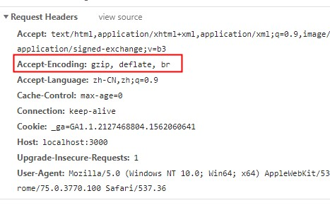

永不放弃，永不放弃又有两个原则，第一个原则是永不放弃，第二个原则就是：当你想放弃时回头看第一个原则。
做过web性能优化的同学，对性能优化大杀器gzip应该不陌生。浏览器向服务器发起资源请求，比如下载一个js文件，服务器先对资源进行压缩，再返回给浏览器，以此节省流量，加快访问速度。
浏览器通过HTTP请求头部里加上Accept-Encoding，告诉服务器，“你可以用gzip，或者defalte算法压缩资源”。

那么，在nodejs里，是如何对资源进行压缩的呢？答案就是Zlib模块。
zlib模块提供 Gzip 和 Deflate/Inflate 来实现压缩功能.
const zlib = require('zlib')
const fs = require('fs')
const gzip = zlib.createGzip()
const inp = fs.createReadStream('1.txt')
const out = fs.createWriteStream('1.txt.gz')
inp.pipe(gzip).pipe(out)const zlib = require('zlib')
var fs = require('fs')
var gunzip = zlib.createGunzip()
var inFile = fs.createReadStream('./1.txt.gz')
var outFile = fs.createWriteStream('./2.txt')
inFile.pipe(gunzip).pipe(outFile)zlib 可以用来实现对 HTTP 中定义的 gzip 和 deflate 内容编码机制的支持。
HTTP 的 Accept-Encoding 头字段用来标记客户端接受的压缩编码。
// 服务端示例
// 对每一个请求运行 gzip 操作的成本是十分高昂的.
// 缓存压缩缓冲区是更加高效的方式.
const zlib = require('zlib')
const http = require('http')
const fs = require('fs')
http.createServer((req, res) => {
const raw = fs.createReadStream('index.html')
let acceptEncoding = req.headers['accept-encoding']
if (!acceptEncoding) {
acceptEncoding = ''
}
if (/\bdeflate\b/.test(acceptEncoding)) {
res.writeHead(200, { 'Content-Encoding': 'deflate' })
raw.pipe(zlib.createDeflate()).pipe(res)
} else if (/\bgzip\b/.test(acceptEncoding)) {
res.writeHead(200, { 'Content-Encoding': 'gzip' })
raw.pipe(zlib.createGzip()).pipe(res)
} else {
res.writeHead(200, {})
raw.pipe(res)
}
}).listen(3000)
// 客户端请求示例
const zlib = require('zlib')
const http = require('http')
const fs = require('fs')
const request = http.get({
host: 'localhost.com',
path: '/',
port: 3000,
headers: { 'Accept-Encoding': 'gzip,deflate' } })
request.on('response', (response) => {
const output = fs.createWriteStream('index.html')
switch (response.headers['content-encoding']) {
// 或者, 只是使用 zlib.createUnzip() 方法去处理这两种情况
case 'gzip':
response.pipe(zlib.createGunzip()).pipe(output)
break
case 'deflate':
response.pipe(zlib.createInflate()).pipe(output)
break
default:
response.pipe(output)
break
}
})默认情况下, 当解压不完整的数据时 zlib 方法会抛出一个错误. 然而, 如果它已经知道数据是不完整的, 或者仅仅是为了检查已压缩文件的开头, 可以通过改变用来解压最后一个的输入数据块的刷新方法来避免默认的错误处理.
const zlib = require('zlib')
const buffer = Buffer.from('eJzT0yMA', 'base64');
zlib.unzip(buffer, { finishFlush: zlib.constants.Z_SYNC_FLUSH }, (err, buffer) => {
if (!err) {
console.log(buffer.toString());
} else {
// 错误处理
}
})